1. Главная
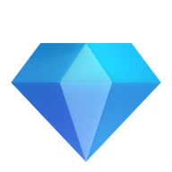
3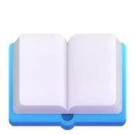
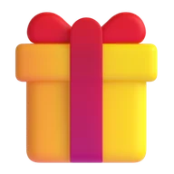
сундук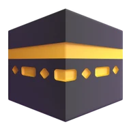
Намаз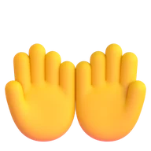
Дуа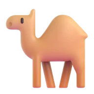
Сира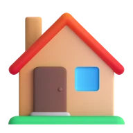
Главная Уроки
Уроки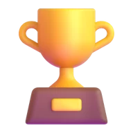
Рейтинг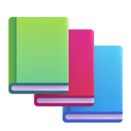
ЗаданияОдна главная зелёная кнопка «Продолжить» ведёт ровно туда, где ребёнок остановился. Ниже — 3 задания дня с наградой и сундуком, потом крупные плитки предметов с полоской прогресса. Всё остальное (дуа дня, хадис дня, повторение) — во вкладке «Я» или после плиток.
2. Шаг урока
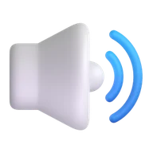
Вместо страницы с карточками — короткие шаги: одна мысль, крупная картинка, голос Сабура. Наверху точки-шаги и награда за урок. Внизу одна большая кнопка. Фон — своя сцена у каждого предмета (здесь — двор мечети для фикха).
3. Задание «найди»
 ?
?Новый вид заданий: не выбрать ответ из трёх, а нажать прямо на нужное место в аяте или на картинке. Подходит для таджвида («найди гунну, калькалю»), Алифбы («найди все буквы ب»), намаза («нажми, куда смотрим в суджуде»). Пчёлка Асаль подсказывает, если ребёнок долго ищет.
4. Конец урока
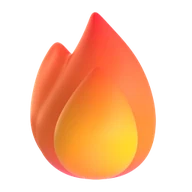
4дня подрядПраздник в конце: сундук открывается, звёзды, конфетти и звук. Сразу видно, что получил: баллы в рейтинг, финики для Оазиса и серию дней. Кнопка «Дальше» ведёт к следующему уроку, а не в список.